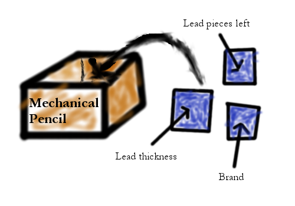

Object Oriented Programming (OOP) Explained
Now, there are probably hundreds of tutorials out there which explain object oriented programming. They might be confusing, using strange terminology, and jumping into complex concepts like "polymorphism" too fast. My goal in this post is to teach the mysterious "OOP" in the most straightforward way possible
The boxes concept
You've probably heard of a languages "primitive types" which can't be broken down - integers, floats, doubles, chars, so on (it varies between languages). Now think of these primitive types as tiny cubes. If you stack the cubes, or combine them, you can create something new. You can create new "objects." To give an example, think of a mechanical pencil. How would you represent it using primitive types? Well, you could represent how many sticks of lead there are left with a number. You can represent the lead thickness as a number. You can represent the brand name as a string of characters.
Because all of these tiny cubes are related to one thing, imagine putting them together into a cardboard box. Call this box "Mechanical Pencil". What I just described is the core concept of OOP. You define an object as a box with a name, in this case, "Mechanical Pencil" . Then you put tiny cubes storing the other values in the box. Now, with the box, you have represented the object.
Extending to inheritance
Now, let's think of something a little more complex. What if we put a cardboard box in another card board box? Logically, the outer cardboard box would contain everything the inner one did, including more properties which were in the box already. This describes inheritance.
Inheritance is when one object has all the qualities of another, except it adds a little more functionality. For example, we could define a object "Writing Device" and put that box into "Pencil," and put the "Pencil" box into "Mechanical Pencil." Likewise, we could also put "Writing Device" into "Paintbrush" or put "Pencil" inside "Color Pencil." Inheritance helps you create a hierarchy of objects, shown in the picture to the left.
Adding functions to the description
This will be easier to understand if you know Python, because in Python functions are objects too and they have a type. Basically, if you consider functions as little cubes, you could add functions as "properties" of an object. So "Writing Device" would have a function called draw(). All objects which inherit from "Writing Device" would also contain that function. But you can't use the same function for every writing device. You wouldn't draw a line with a pencil the same way you would draw a line with a paintbrush. So this "draw" function would have to be "overrided" for each inheriter of "Writing Device." Overriding a function with the same name is called polymorphism.
And finally, syntax.
(Note: This part is specific to Python.)
And finally, we get to syntax. Here's a quick overview:
class ClassName(stuff, to, inherit): # For MechanicalPencil, this would be the Pencil class. You can inherit more than one class.
def __init__(self, testyArgument): # What happens when you create the object
self.testyProperty = 1.234 # Test property, or "small cube." A number in this point.
self.customArgument = testyArgument
pass # you can add more code other than variable definitions
def testyTestFunc(self, arg1, arg2): # Always include self
pass # stuff hereTo give you a lookahead, here's a minimalistic implementation of the MechanicalPencil class. This implementation has no WritingDevice base class or Pencil. It's a standalone.
class MechanicalPencil:
def __init__(self, brand, productNumber):
self.brand = brand
self.productNumber = productNumber
self.leadPieces = 3
def refill(self, numLead):
self.leadPieces += numLead
def draw(self):
if self.leadPieces != 0:
print('I drew a line!')
else:
print('Please refill me.')And that's it for that blog post! I hope it helps you, and make sure to read the next post!